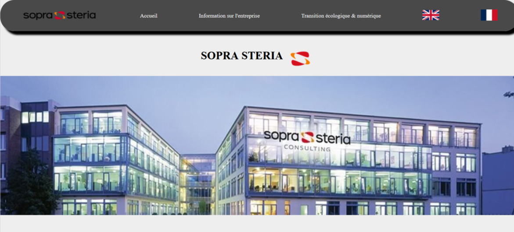

Recueil des besoins et création d'un site web.
Notre premier projet de BUT, était de créer un site web pour une entreprise définie.
Ce site devait vulgariser ce que faisait l'entreprise pour que ce soit compréhensible pour des élèves de 3ème, et que ça leur donne envie de faire leur stage dans cette entreprise.
Ce projet se faisait par groupes de 4 personnes et nous avions choisi l'entreprise Sopra Steria.
Nous avons commencé par recueillir les besoins, nous avons donc sélectionné les informations concernant l'entreprise qu'il était pertinant de mettre dans notre site.
Nous avons ensuite conçu la maquette du site, et une fois qu'elle était terminée, nous avons commencé à codé le site.
Nous nous sommes réparties équitablement le travail, et j'avais donc à faire les pages secondaires du site tel que les activités de l'entreprise ou les produits et services qu'elle vendait.
Je me suis aussi occupée de traduire le site en anglais.
En tout ce projet s'est fait sur 2 mois et le résultat final de notre site était plutôt satisfaisant.
Extrait de la page d'accueil de notre site
